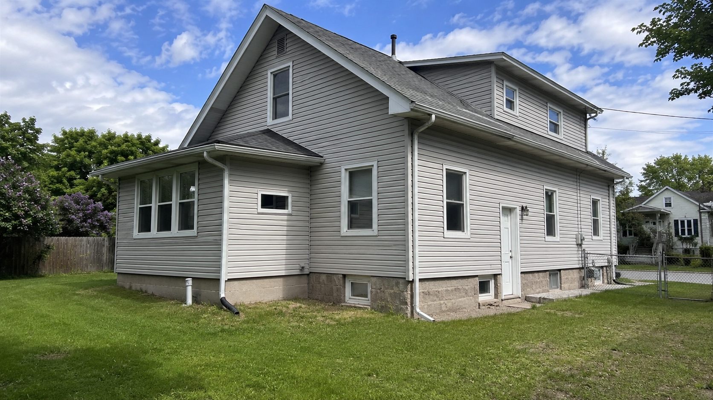
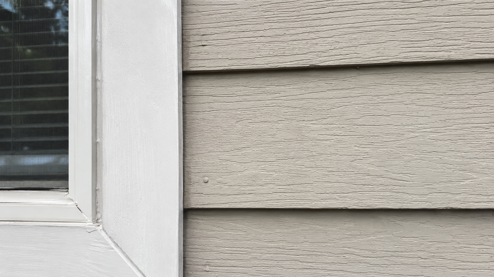
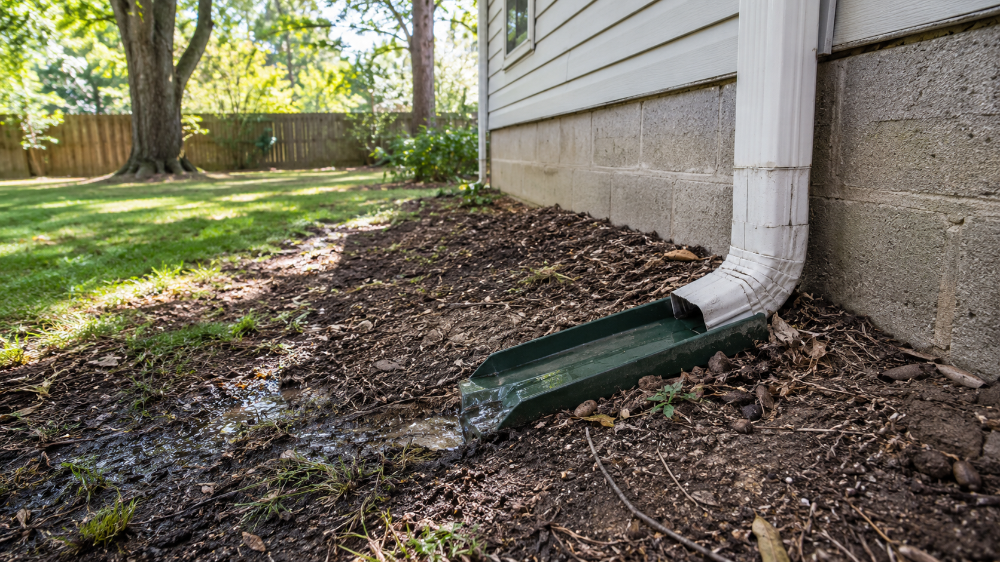
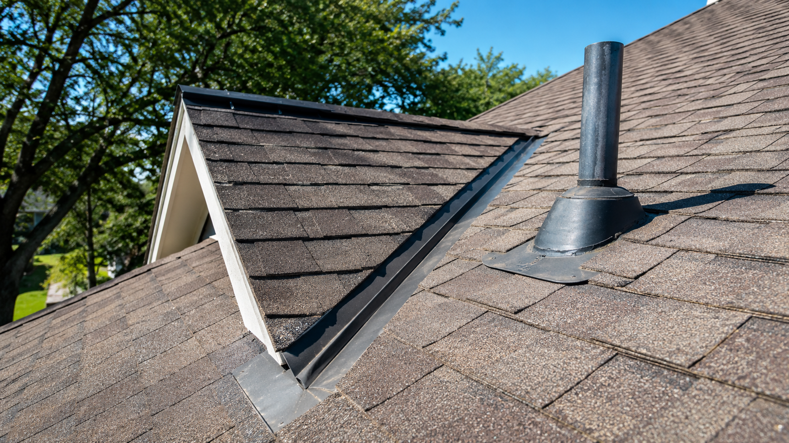
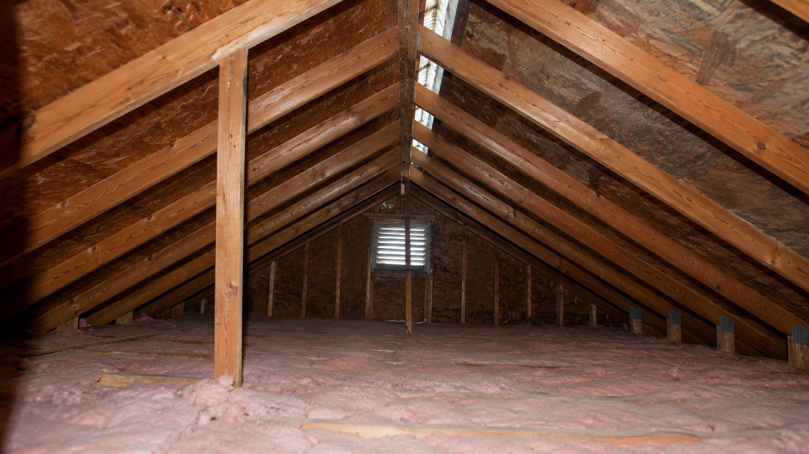
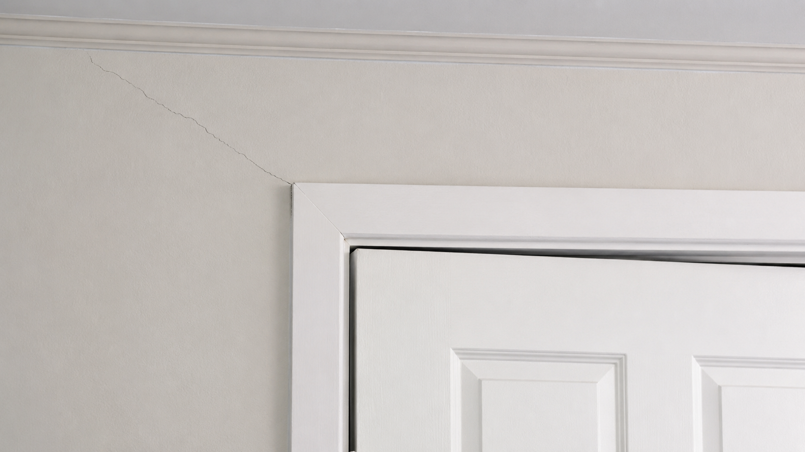
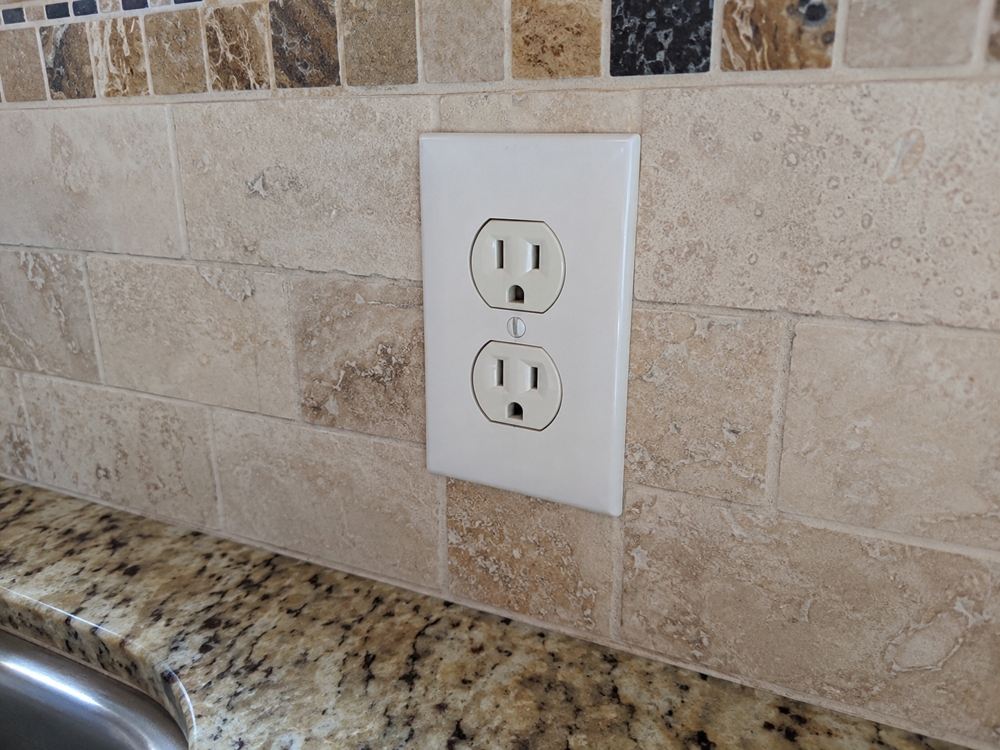

Hidden Problem House
A place can look sharp and still have a hitch in its giddyup.
Rex Shepherd provides building inspection services for buyers, sellers, and homeowners who want a straight answer before they make a big decision. He is looking for the stuff that gets expensive when nobody catches it early: bad drainage, tired roofing, movement, wiring issues, and the little warning signs most folks never get told about.
What Rex Does
Make it plain: Rex inspects houses and buildings so people know what they are dealing with.
He is not selling a story. He is providing building inspection services backed by years in the field, years in construction, and years around building safety. If you are buying, selling, or just need a clear read on a property, that is the job.
Inspection Sequence
Here is how Rex goes through a house.
01 / Exterior
Start outside. A house will usually give itself away.
Before Rex ever steps through the front door, he is already picking up the story. The rooflines, siding, trim, and slope around the place will tell you whether this house has been cared for or whether it has been getting by on good looks.
- Roof edges and tie-ins can show wear, loose flashing, and where rain is starting to win.
- Trim, caulk, and window details often show weather trouble before the inside ever does.
- If the ground holds water against the house, the foundation usually pays for it later.


02 / Moisture
Water does not need much. Just time and one soft spot.
Drainage is where a lot of expensive headaches get started. A house can photograph great, smell clean, and still be feeding water right back toward the slab every time Oklahoma gets a hard rain.
- Low spots, short downspouts, and runoff trails matter long before you ever see a stain inside.
- Wet soil and splash-back around the foundation are early clues, not harmless little details.
- When water leaves the house properly, a lot of future trouble leaves with it.

03 / Roof
The roof is not a side note. It is a whole chapter.
Rex is looking at more than shingles. He is watching the flashing, vent boots, penetrations, and attic airflow too. If the roof work is tired or sloppy, the repair bill usually does not stay on the roof.
- Valleys, penetrations, and flashing details usually show the first honest signs of trouble.
- Shingle wear can tell you the difference between normal age, poor install work, and patch jobs.
- The attic helps confirm whether the roof system is handling heat and moisture the way it should.


04 / Structure
One crack might be nothing. A pattern is a different matter.
Rex is not in the business of spooking people. He is there to separate ordinary settling from the kind of movement that can turn into real repair money. That takes a steady eye and some common sense.
- One crack alone does not say much. Repeating cracks and shifted openings say more.
- Wall lines, trim fit, door operation, and foundation clues all have to agree with each other.
- Clients need a calm read on it, not a bunch of drama.

05 / Systems
Fresh paint is nice. It still does not run the house.
Panels, outlets, plumbing connections, water heaters, and HVAC equipment are what tell you how this place is going to behave after move-in day. A house can be dressed up just fine and still be behind where it counts.
- Equipment age and condition usually tell you whether you are buying time or buying a repair list.
- Electrical details can point to safety concerns, missing updates, or corners cut over the years.
- Once the keys are in your pocket, function matters a whole lot more than cosmetics.


Inspector Note
Rex Shepherd gives people the kind of answer he would want himself.
No runaround. No trying to sound smarter than the room. Just a steady, professional building inspection from a man who has spent decades around construction, maintenance, and building safety, so a buyer or seller can make a decision with both eyes open.

Rex Shepherd
Owner/Inspector • Oklahoma License #70002825
Final Recommendation
If there is a problem, better to find it now than after closing day.
Exterior
Read the outside first and let the clues stack up
Moisture
Drainage problems stay quiet until the bill shows up
Roof
Roof details are small right up until they are not
Structure
One crack is a note, but a pattern is a warning
Systems
The systems decide whether the house is ready or not
(405) 538-9759
Email CrownSinspections@gmail.com if you need a buyer inspection, seller inspection, or a plain-English read on the condition of a house or building.
Rex brings more than 25 years of inspection experience and 48 years of broader construction and building safety experience to every job.
Crown S Home Inspections serves Oklahoma City, Edmond, Norman, Moore, Yukon, Mustang, and the towns around them.